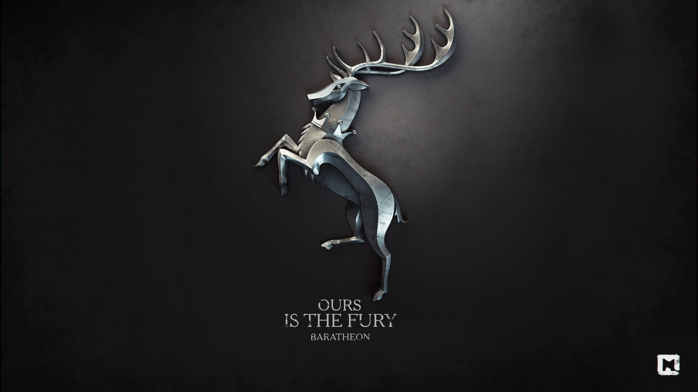

Баратеоны
Баратеоны (ориг. House Baratheon) — великий дом Вестероса, бывшая королевская династия. Символ этого дома — черный коронованный олень, стоящий на задних ногах на золотом поле, а его девиз: «Нам — ярость». Корона на гербе появилась не сразу, она была добавлена, когда Роберт Баратеон завоевал Железный трон.
Изначально фамильным замком Баратеонов был Штормовой Предел, но после того как Роберт стал королем, дому стал принадлежать также замок Таргариенов Драконий Камень, а сам король стал править из Королевской Гавани.
История
До событий сериала
Родоначальником дома является Орис Баратеон, который был генералом у Эйгона Завоевателя. Ходили слухи, что Орис является бастардом и сводным братом Эйгона. Орис убил последнего короля Штормового Предела, Аргилака Надменного, и занял замок. Его дочь, Аргеллу, он взял в жены, а также взял его герб и девиз.
281 год спустя Роберт Баратеон поднял восстание против короля Эйриса II Таргариена, которого прозвали «Безумным королём». Сын короля, Рейгар Таргариен, похитил возлюбленную Роберта и сестру Эддарда Старка, Лианну. Также сам Безумный король убил её родню: отца Рикарда Старка и старшего брата Брандона Старка. Баратеоны, при поддержке Старков, Арренов и Талли разгромили армию Таргариенов в битве на Трезубце, в то время как Ланнистеры хитростью овладели Королевской Гаванью. Было решено, что королем станет Роберт. Чтобы укрепить союз, он женился на Серсее Ланнистер.
Роберт правил страной из Королевской Гавани, дав власть над Штормовыми землями младшему брату Ренли, а не первому в линии наследования Станнису. Последнему достался Драконий Камень, бывший прежде вотчиной Таргариенов. Замок имел символическое значение, будучи владением наследных принцев при прежней династии. Вероятно, решению короля способствовала и военная необходимость, ведь земли у Черноводного залива населяли приверженцы Таргариенов. Решение брата уязвило Станниса. В отличие от Ренли, он не был введен Малый совет и не пользовался большим влиянием в столице.
Последние годы прошли для дома Баратеонов тревожно. Роберт опасался возвращения наследников Таргариенов, и чувствовал усиление сепаратизма великих домов Вестероса. Он опирался на пользовавшегося репутацией благородного человека Эддарда Старка, бывшего правителем Севера, и сделал его Десницей. Однако король не предпринимал других действий по укреплению власти. Он предпочитал проводить время, предаваясь пьянству и развлечениям.
То, как Роберт хотел разделить свои владения между наследниками осталось непонятным. Возможно, у него не было плана. Его смерть привела к великой смуте в королевстве и схватке за Железный трон.
Известные представители
- Король Роберт Баратеон, бывший глава дома, Король Андалов и Первых Людей, Защитник Государства, Лорд Семи Королевств. Умер от ран, полученных во время охоты на кабана в 298 году после В.Э. в возрасте 46 лет.
- Королева Серсея Ланнистер, жена Роберта и ныне его вдова. Королева Андалов и Первых Людей и Защитница Государства.
- Неназванный первый сын Роберта и Серсеи, умер в младенчестве от лихорадки.
- Король Джоффри Баратеон, старший сын Серсеи и Роберта (его настоящий отец Джейме Ланнистер). Король Андалов и Первых Людей, Защитник Государства и Лорд Семи Королевств. Отравлен в 301 году от З. Э. в возрасте 19 лет на собственной свадьбе Оленной Тирелл.
- Принцесса Мирцелла Баратеон, дочь Серсеи и Роберта (её настоящий отец Джейме Ланнистер). Отравлена Элларией Сэнд в 302 году от З. Э. в возрасте 19 лет.
- Король Томмен Баратеон, младший сын Серсеи и Роберта (его настоящий отец Джейме Ланнистер). Король Андалов и Первых Людей, Защитник Государства и Лорд Семи Королевств. Покончил с собой после разрушения Великой септы Бейлора в 303 году от З. Э. в возрасте 16 лет.
- Королева Маргери Тирелл, жена короля Томмена. Погибла при взрыве Великой септы Бейлора в 303 году от З. Э.
- Король Станнис Баратеон, младший брат Роберта, Король Андалов и Первых Людей, Защитник Государства и Лорд Семи Королевств. Казнён Бриенной Тарт в 302 году от З. Э. за убийство Ренли Баратеона.
- Королева Селиса Баратеон, урождённая Флорент, жена Станниса, покончила с собой после сожжения дочери в 302 году от З. Э.
- Петир Баратеон, мёртворождённый сын Станниса и Селисы.
- Томмард Баратеон, мёртворождённый сын Станниса и Селисы.
- Эдрик Баратеон, мёртворождённый сын Станниса и Селисы.
- Принцесса Ширен Баратеон, дочь Станниса и Селисы. Была сожжена заживо в качестве жертвоприношения Владыке Света в 302 году от З. Э. в возрасте 15 лет.
- Король Ренли Баратеон, младший брат Роберта и Станниса. Король Андалов и Первых Людей, Защитник Государства и Лорд Семи Королевств. Убит тенью Станниса в 299 году от З. Э.
- Лорд Джендри Баратеон, узаконенный бастард Роберта и единственный выживший его ребёнок.
- Барра, бастард Роберта от простолюдинки Мэйген. Была убита Джаносом Слинтом по приказу Джоффри Баратеона в 299 году от З. Э.
- Ещё 18 неназванных бастардов Роберта, все они были убиты по приказу Джоффри Баратеона.
Предки
- Лорд Орис Баратеон, основатель дома, незаконнорождённый брат Эйгона I Таргариена, бывший глава дома. Первый Верховный Лорд Штормовых Земель и Лорд Штормового Предела.
- Леди Аргелла Баратеон, урождённая Дюррандон, жена лорда Ориса, мать Акселя, Серака, Этелиды, Терезы и Микала.
- Аксель Баратеон, старший сын лорда Ориса и Аргеллы. Родился во 2 году от З. Э. Был женат на Аланне Пенроз. Умер от ранения, полученного во время поединка с Стеффоном Трэнтом в 44 году, защищая честь своей жены.
- Аланна Баратеон, урождённая Пенроз, жена Акселя.
- Лорд Серак Баратеон, второй сын лорда Ориса и Аргеллы. Родился в 5 году от З. Э. Женился на Монике Веларион в 22 году от З. Э., бывший глава дома. Второй Верховный Лорд Штормовых Земель и Лорд Штормового Предела. Умер в возрасте 67 лет от тяжёлой простуды.
- Леди Моника Баратеон, урождённая Веларион, жена Серака, мать пятерых сыновей: Уильяма, Реджинальда, Стеффона, Падраика и Флинна.
- Лорд Уильям Баратеон, старший сын лорда Серака и Моники, бывший глава дома. Третий Верховный Лорд Штромовых Земель и Лорд Штормового Предела.
- Леди Мартина Маллендор, жена лорда Уильяма и мать пятнадцати детей.
- Уильям Баратеон, старший сын лорда Уильяма и леди Мартины, назван в честь отца.
- Джон Баратеон, второй сын лорда Уильяма и леди Мартины.
- Мартин Баратеон, третий сын лорда Уильяма и леди Мартины.
- Мейс Баратеон, четвёртый сын лорда Уильяма и леди Мартины.
- Орис Баратеон, пятый сын лорда Уильяма и леди Мартины, назван своим отцом в честь его деда лорда Ориса Баратеона.
- Теодор Баратеон, шестой сын лорда Уильяма и леди Мартины.
- Брайт Баратеон, седьмой сын лорда Уильяма и леди Мартины.
- Томмакс Баратеон, восьмой сын лорда Уильяма и леди Мартины.
- Лоракс Баратеон, девятый сын лорда Уильяма и леди Мартины.
- Лекс Баратеон, двенадцатый и самый младший сын лорда Уильяма и леди Мартины.
- Дочь лорда Уильяма и леди Мартины.
- Аргелла Баратеон, третья дочь лорда Уильяма и леди Мартины, названа своим отцом в честь его бабушки леди Аргеллы Баратеон.
- Реджинальд Баратеон, второй сын лорда Серака и леди Моники.
- Стеффон Баратеон, третий сын лорда Серака и леди Моники.
- Падраик Баратеон, четвёртый сына лорда Серака и леди Моники.
- Флинн Баратеон, пятый и самый младший сын лорда Серака и леди Моники.
- Этелида Баратеон, старшая дочь лорда Ориса и леди Аргеллы. Родилась в 7 году от З. Э. В возрасте 15 лет сбежала вместе с межевым рыцарем и с тех пор их никто не видел.
- Тереза Баратеон, младшая дочь лорда Ориса и леди Аргеллы. Родилась в 9 году от З. Э.
- Сир Микал Баратеон, третий и самый младший сын лорда Ориса и леди Аргеллы. Родился в 11 году от З. Э. Рыцарь и член Королевской гвардии при Эйнисе I Таргариене. Вступил в Королевскую гвардию под командованиям сира Сервина Эррола в 23 года. Погиб в ходе Восстания Святого воинства в 41 году от З. Э., защищая короля Эйниса и его семью.
- Лорд Боррос Баратеон, бывший глава дома, Верховный Лорд Штормовых Земель и Лорд Штормового Предела во времена Танца драконов.
- Лорд Симеон Баратеон, бывший глава дома, Верховный Лорд Штормовых Земель и Лорд Штормового Предела.
- Лорд Лионель Баратеон, по прозвищу «Смеющийся Шторм», сын лорда Симеона и леди Миры. Рыцарь, бывший глава дома, Верховный Лорд Штормовых Земель и Лорд Штормового Предела. Умер в возрасте 45 лет от лихорадки.